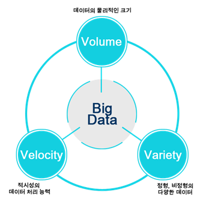

더조은 아카데미

-
-
생명의 근원인 바다는
모든 생물체가 생존하는데 없어서는 안될 존재입니다.
지구 표면의 70%는 바다이며, 모든 생물의 80%는 바다에서 삽니다
기후자료를 잘 알고 활용하면 더 많은 혜택과 이익을 거둘 수 있습니다.
-
C조에서는
공공데이터센터와 기타 데이터셋 제공 사이트의 다양한 자료를 토대로
해양쓰레기와 폐기물들이 얼마나 지구 수질을 오염시키는지
빅데이터 분석을 통해 알아보고자 합니다
-
또한
통계처리를 통해 버려지는 폐기물의 양과 수질을 예측하는 모델을 만들어서
폐기물 수거업체의 효율적인 업무를 지원하는 모델을 제공할 것입니다
-
폐기물과 수질오염 상관관계 예측

주요 특성
- BigData
- · 1일 폐기되는 쓰레기 양 분석을 위한 데이터셋
- · 방대한 실제 공공시설 데이터셋 제공
- Platform
- · 개인 서버, 실제 사용가능한 웹 사이트 사용법 제공
- · 프로젝트 진행 과정 소개
- Application
- · 호환성·응용성 구현의 사용자중심의 맞춤형 분석기능 솔루션 제공
- · 머신러닝/딥러닝 분석결과를 실시간으로 사용자에게 제공
- Easy
- · 외부 웹사이트 연결 및 데이터 제공 포털 추천
- · 전처리가 완료된 데이터 제공
더 조은 아카데미
- 지하철 이용안내
- 버스 이용안내